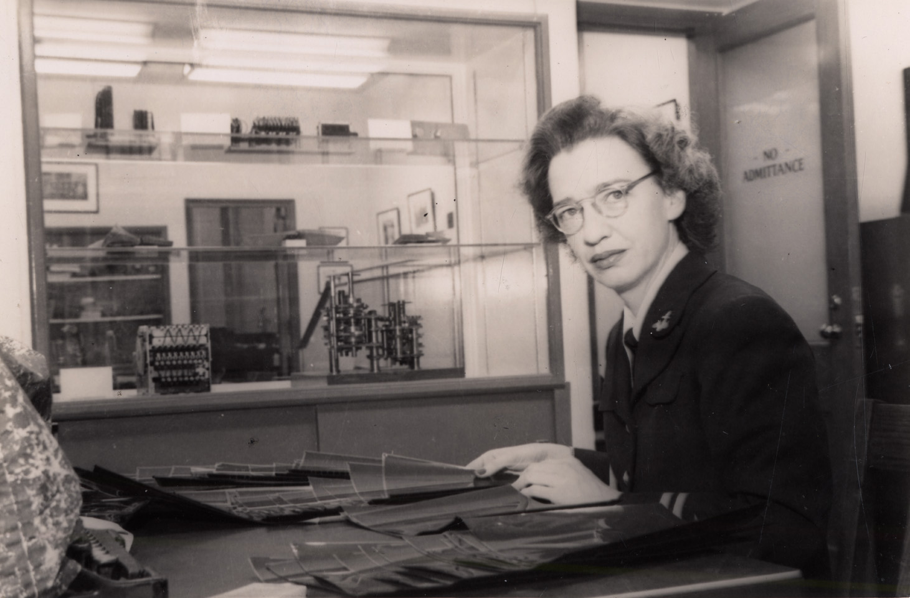

7 Women Who Invented and Innovated in Tech
Meet seven women whose inventions and innovations have shaped today’s IT


Ada Lovelace
Algorithm Enchantress
Her impact on technology
Ada Lovelace was unique in that she developed an algorithm for a computer that didn’t yet exist — an accomplishment that some say qualifies her as the world’s first computer programmer.
Born to English nobility in 1815, Lovelace was put to work by Charles Babbage in 1843, documenting his never-to-be-realized “computer,” the Analytical Engine. Starting with a document written in French by Luigi Menabrea, an Italian mathematician, Lovelace added extensive notes to the English translation, including the world’s first computer algorithm.
The Analytical Engine was intended to count Bernoulli numbers, but Babbage was unsuccessful in getting the funding to build his machine. Notably, Lovelace was able to see the potential for the computer beyond simple math.
Where is she now?
In 1852, Lovelace died of uterine cancer at the age of 36.
Her work went largely underreported for many years, but today she’s celebrated each year on Ada Lovelace Day and memorialized by the object-oriented programming language that bears her name, Ada.
Words of Wisdom
“A new, a vast, and a powerful language is developed for the future use of analysis, in which to wield its truths so that these may become of more speedy and accurate practical application for the purposes of mankind than the means hitherto in our possession have rendered possible.”
Learn more about Ada Lovelace on:
Grace Hopper
Programming Pioneer
Her impact on technology
Called the Queen of Software by some and Grandma COBOL by others, Navy Rear Admiral Grace Hopper helped invent some of the early English-language programming languages. She is most famously associated with the Common Business-Oriented Language (COBOL), which was based on the FLOW-MATIC language that she designed back in 1958.
Before the invention of such language-based programming, computers spoke exclusively in binary code, which was illegible to human beings. Hopper was convinced that if programming were produced in a form that anyone could read, then there would be more programmers. It turns out that she was right.
While COBOL isn’t exactly the cutting edge of programming technology today, it still has a faithful following. In fact, in a recent Computerworld survey, 53 percent of the organizations that responded said that they were using COBOL to build new business applications.
Where is she now?
For years, Grace Hopper toured the country, visiting schools and military bases to give lectures on computers and the history of programming languages. She memorably sat down with David Letterman in 1986 and discussed her time spent with the first computer, the Mark I.
Hopper died in 1992 at the age of 85.
Words of Wisdom
“We're only at the beginning. We've been through the preliminaries. We've got the Model T. That's where we are now.”

Learn more about Grace Hopper on:
Hedy Lamarr
Wireless Visionary
Her impact on technology
Largely known as a screen star of the 1920s, Hedy Lamarr proved to be more than just a pretty face. She played a key role in the invention of spread-spectrum technology; specifically, by conceptualizing the idea of frequency hopping, which is a method of sending radio signals from different frequency channels.
Lamarr and her co-inventor, George Antheil, developed the technology originally to help the Navy remotely control torpedoes. The key value of frequency hopping was that the randomized channel switching made it difficult for outside agents to understand what was being communicated. It was, in essence, an early form of encryption technology.
The two received a patent on their idea on August 11, 1942, according to the American Heritage of Invention & Technology. But despite lobbying and fundraising efforts on their part, the Navy ultimately passed on the technology.
It was reborn, however, in the late 1950s when engineers at Sylvania Electronic Systems Division revived it, which led to the use of Lamarr’s frequency hopping concept in secure military communications. Her work on spread-spectrum has played a part in many modern wireless technologies, such as Bluetooth, Wi-Fi and Code Division Multiple Access (CDMA).
Where is she now?
After initially receiving very little recognition for her work on spread-spectrum technology, Lamarr was honored with a special award: the Pioneer Award by the Electronic Frontier Foundation in 1997. This long overdue recognition for her scientific endeavors came just three years before her death, in 2000.
Her legacy lives on in the world of wireless technologies, and through the continued efforts of her son Anthony Loder. He recently spoke with CBS News about his mother’s gift for invention, which is the subject of Hedy’s Folly, a new book by Pulitzer Prize–winning writer Richard Rhodes.
Words of Wisdom
“When they called her up to tell her she would get the award, her first words were, Hedy Lamarr being Hedy Lamarr, ‘Well, it's about time.’”
Learn more about Hedy Lamarr on:
Dr. Erna Hoover
Telephony Hero
Her impact on technology
Dropped calls and busy signals are an annoyance that most could do without. But we’d have a lot more of them if it weren’t for Dr. Erna Hoover. While working at Bell Laboratories, she invented a telephony switching computer program that kept phones functioning under stressful loads.
“I designed the executive program for handling situations when there are too many calls, to keep it operating efficiently without hanging up on itself. Basically it was designed to keep the machine from throwing up its hands and going berserk,” Hoover told the New Jersey Star-Ledger.
Her 1971 patent for this technology was among one of the first software patents ever issued. Even more impressive: She worked on her idea while still in the hospital following the birth of her second daughter.
Where is she now?
In 2008, Hoover was inducted into the National Inventors Hall of Fame in Akron, Ohio, for her work on telephony. At 86, she is now retired.
Words of Wisdom
“When I was hired, the glass ceiling was somewhere between the basement and the sub-basement.”
Learn more about Dr. Erna Hoover on:
Susan Kare
User Interface Guru
Her impact on technology
Susan Kare, described by some as “the Betsy Ross of the Personal Computer,” was the designer who helped bring the Apple computer to life with her sophisticated typography and iconic graphic design skills. Working alongside Steve Jobs, she shaped many of the now-common interface elements of the Mac, like the command icon, which she found while looking through a book of symbols.
She also created the Happy Mac icon, which greeted Apple users when they booted their machines, and the trash can icon, which let users know where to put files they no longer wanted. If Jobs is credited with making technology more personable through Apple’s devices, it’s in part because of Kare’s efforts to make the computer feel more like a friend — and less like a machine.
But she didn’t work exclusively on Apple products. In the mid-1980s, after Jobs was forced out, Kare left Apple and worked with Microsoft, where she applied her design skills to humanizing the Windows 3.0 operating system.
Kare’s design work didn’t stop with Apple and Microsoft. Her hand can be seen in many of Facebook’s “digital gifts,” including the friendly rubber ducky. Her most recent digital footprint can be seen in the online media powerhouse Glam Media, where she served as a co-founder and the organization’s creative director.
Where is she now?
Kare owns a digital design firm (kare.com) in San Francisco, and she sells prints of her designs on kareprints.com
Words of Wisdom
“It is possible to teach most people to use one of these computers in about 20 minutes. A lot of that is because you can explain what an icon means and a person can remember it easily.”

Learn more about Susan Kare on:
Mary Lou Jepsen
Screen Display Rebel
Her impact on technology
Mary Lou Jepsen knows that the screen is the gateway to all of the transformative powers that a computer can hold. She co-founded and served as the chief technology officer of MicroDisplay in 1995, where worked on creating small screens. She later ran the display division at Intel, until she was spirited away by a bold dream: a computer for every child.
As co-founder of One Laptop Per Child, a nonprofit organization with the mission of providing children worldwide with affordable, green notebook computers, Jepsen gained attention for her hardware prowess in producing the XO, one of the lowest-power, lowest-cost notebooks ever made.
The prototype device was unveiled at the UN by Kofi Annan, and Jepsen won the backing and support of major manufacturers which allowed OPLC to kick-start high-volume production of its devices.
Where is she now?
Jepsen left OPLC in 2008 to start Pixel Qi, a for-profit company that leveraged many of the technological advances she achieved with the XO.
As the company begins rolling out its end-user devices with Jepsen’s displays, she couldn’t be prouder of the technological milestones.
“We have pushed the power consumption of screens down by up to 10 times in products we are shipping today, and are poised to bring that down another 10 times using our new architectures,” Jepsen told BizTech magazine in a recent interview. “We have shipped 3 million units, all readable in direct sunlight, and are the first truly fabless-display company using existing high-volume machinery at the factories in novel ways to achieve this dramatic power savings.”
She is currently an executive at Facebook / Oculus VR
Words of Wisdom
“Devices should not need power adaptors. The calculator is the correct model. A little room light on a solar cell is all that is needed to power a calculator. Wouldn’t it be great if we could do the same for cell phones, laptops, tablets and personal medical devices? To get there, we will need to use better solar cells and batteries, but the screens must decrease the power consumption 100-fold to enable this, as we are doing at Pixel Qi.”

Learn more about Mary Lou Jepsen on:
Marissa Mayer
Search Siren
Her impact on technology
Marissa Mayer is Google’s first female engineer (she’s actually employee number 20), having joined the search-engine superstar back in 1999, when it was still a startup.
Now vice president of location and local services, Mayer leads product management and engineering for a variety of search products, including Google Maps, Local Search, Google Earth, Street View and Latitude. Her talents in user interface design and product vision have helped keep Google at the top as a leading web, mobile and search company.
At 36, she is the youngest member of Google’s executive operating committee, and an inspiration to women aspiring to careers in technology.
“The number one most important thing we can do to increase the number of women in tech is to show a multiplicity of different role models," Mayer said in article for The Huffington Post. “The stereotype of that very complete and rigid picture of what being a computer scientist means really hurts people's understanding and ability to identify with the role and say, ‘Yes, this is something I can be in and want to be in.’”
Where is she now?
Mayer continues her work on local, maps and search-based products at Google. She was also recently named to Wal-Mart’s board of directors.
She is currently serving as the president and CEO of Yahoo!
Words of Wisdom
“It’s important to explore some of these far-flung ideas. And I’ve also been at Google long enough now that I’ve seen that some of those far-flung ideas do become core.”

Learn more about Marissa Mayer on: